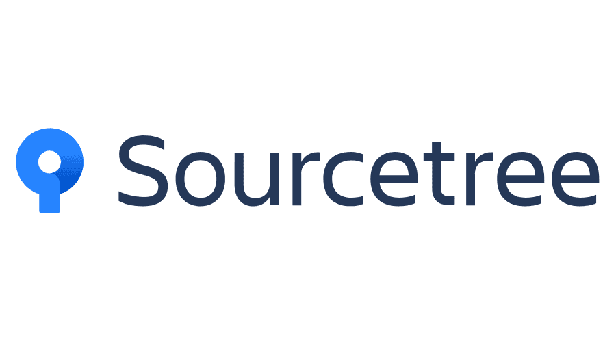
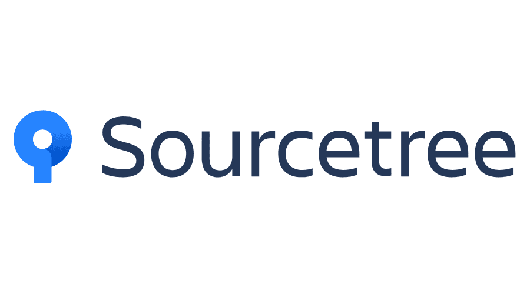

Ken CHENG
1071724 · 鄭淂元 ·
叡揚資訊實習生
我是第26屆元智資管校外實習生，我從今年一月開始於叡揚資訊實習一年，
目前的實習單位為ICBU，主要業務為知識管理系統。
我負責的是其中一個知識管理系統專案的維護，這個知識管理系統簡稱LKM，提供該客戶處理知識文件創造與分享相關作業。LKM包含了知識搜尋、知識交流園地、知識分享、我的知識、權限控管、外部資料匯入、統計分析、資料移轉、知識文件上傳、系統整合、連結線上表單簽核等主要功能項目。當中，專案維護的工作內容大致包含了功能測試、修正弱點問題與調整程式碼等方向。


在寒假時，我們進行了為期17天的新人訓練，第一個禮拜學習了MS SQL的進階資料庫語法；第二個禮拜學習了基礎前端運用、MVC的程式撰寫；第三個禮拜則是學習進階的前端功能，將前面寫過的MVC程式碼改用Ajax傳輸資料，並利用KendoUI完成前端的美化、以及拆解MVC專案的Layer分層實作。
身為一個資訊人員，必須非常清楚知道資訊相關的法律規範，才不會不小心觸法，公司在我們實習分發到各專案支援不久後，便開了這堂資安與智財課，在課堂中向我們詳述智慧財產權的法條規範，講師也非常有耐心的舉例給我們聽，讓我們更深刻的吸收這方面的知識。此外，資安的部分則是告訴我們一些相關的規範以及認證，例如：ISO 27001等，在這堂課的最後進行了認知測驗，只有達到分數門檻的人才算完成該課程。
在剛分發到開發知識管理系統的ICBU時，因為對於整個系統架構都非常不熟悉，所以在前幾天都在閱讀此專案的系統分析說明書等文件，架設好測試機與開發環境後，就開始進行第一次的弱點掃描修正了，此次的弱點掃描是針對「知識館」與「知識搜尋」兩大區進行修正。
有了第一次弱掃修正的經驗後，依據弱掃報告找出每個功能頁面可能面臨的問題的能力有明顯提升了，雖然因此專案的資料傳遞方式相較於之前所學過的都要來得複雜，所以有些bug還是找了蠻久的。第二次的弱點掃描主要是針對「知識達人」與「社群」進行修正，還有一些第一次弱掃修正時遺漏的部分頁面，此次的弱掃也多了第一次掃描報告中沒看到的危險類型，可見一個專案在程式撰寫時需要注意的面向是遠大於我們的想像的。
我在此工作中扮演了測試人員以及修改程式的角色，部門的前輩們給了我很大的空間訓練自己找出解決方式的能力，也不會給我太大的壓力在工作上，所以我在工作時就是依照使用者的習慣去操作，測試每個功能的結果是不是符合操作前所預期的，再對於測試結果決定需不需要調整。
除了修正弱掃報告找出的問題，在測試的過程中我有時候也會找到其他方面（非弱掃報告面）的bug，但因為我目前的工作內容不在該部分，所以我會先提出與前輩討論該程式可能出錯的原因，並先將之記錄下來以便日後修改。
 



在暑假期間，我負責的是工作一樣是地方稅務局的知識管理系統專案的維護，此知識管理系統簡稱LKM，提供各地方稅稅捐稽徵機關處理知識文件創造與分享相關作業。LKM包含了知識搜尋、知識交流園地、知識分享、我的知識、權限控管、外部資料匯入、統計分析、資料移轉、知識文件上傳、系統整合、連結線上表單簽核等主要功能項目。也因為系統內包含的功能多達上百種，故每個功能的操作過程中皆有可能有著隱藏的資安問題，此時就必須透過黑箱及白箱掃描來找出系統的安全漏洞並加以修改，也成為了我在暑假期間最重要的工作內容。
除了修正弱點掃描發現之問題以外，在修正程式後除了讓系統不會被有心人士成功攻擊以外，還必須確保使用者的可用性，因程式間的關係環環相扣，常常都是牽一髮而動全身，這時候就很考驗修正漏洞的人員，要如何進行程式碼的修正，才能避免補好了漏洞卻無法正常執行功能的情況發生，在這個部分也常常需要耗費大量的時間來DEBUG找出問題點，才可以慢慢釐清哪個環節出了差錯造成程式無法運行。
因要讓客戶了解本專案的維護進度，我們需要針對弱掃報告後的系統功能撰寫一份測試報告，詳細地將每個功能一一測試，並將測試之細節整理為Word檔案，以及將各功能的測試結果整理為Excel表單，此報告不僅讓客戶可以得知專案的維護狀況外，也可以讓我們確保程式的修改進度，並加以規劃維修的工作。
因我負責的工作與資安方面相關，故公司也有安排了安全程式開發的課程，在這堂課中講師透過 ASP.NET MVC 實作的購物網站來實際演示OWASP Top 10 的各項漏洞， 讓我們更了解漏洞的發生原因及解法。
因公司在今年參加了經濟部的產業人才能力鑑定計畫，所以在8/25~26這兩天，公司有安排了iPas資訊安全工程師的初級培訓課程給我們所有在叡揚實習的同學們，並且規劃於十一月讓我們去考取能力鑑定。課程中不但提及資安的技術概論，也包含了管理層面，雖然上這堂課時會發現很多相似的概念在先前已經學習過，但透過這次的課程也又重新替自己複習了一次正確的資安觀念，也學到了一些從前不知道的相關細節。
在第二次弱掃修正後，我又先將系統內的所有功能測試過一遍，因為在維護專案的過程當中，必須隨時確保程式是可以正常運行的，沒有問題的話就會進行第三次的弱掃並繼續加以修正。而第三次的弱掃就比較特別了，因為先前兩次的掃描皆只有黑箱，此次則包含了黑箱及白箱掃描，白箱掃描即為針對專案原始碼的掃描，由內部直接對原始碼進行掃描尋找漏洞而產出的報告。雖一開始對於白箱掃描的處理是毫無頭緒，但仔細查看報告內部的內容過後，我也可以從漏洞的說明當中取得它發生的原因，並且在報告中提出的可解決方案裡開始思考如何著手，因為此類型的報告更深層，讓我覺得學習到的概念又更多了一些。
第四次的弱掃報告是針對個人、管理、報表、外蒐四大功能，在此次的報告當中可以明顯發現弱點已經大幅減少，也表示此四部分的弱點已經差不多快修正完畢，但這次的弱掃報告後，我的修正範圍也不僅只是將高風險的問題處理完畢，該處理的問題也要涵蓋到中風險的部分，在此過程中又經歷了一次面對新問題的未知，所以透過網路查找資料也成了這個階段重要的技能之一。
在第五次的弱掃報告執行前，負責我實習工作的工程師就詢問了我先前修正黑箱掃描等等的寫法可能產生的問題，以及一些可能不是很清楚為什麼我會使用那些修正方法，過程中我們互相討論並且將需要修正的部分加以改進。此次讓我比較印象深刻的是，先前提及的SQL Injection問題，因先前的開發人員採用了較偷懶的寫法造成漏洞，我當時也想說不可能將整個程式寫法都修改過，因為時間太有限就先採取了一個較暴力的寫法，但在最後我還是要把這些程式碼重頭寫過，因為原本的暴力方法其實還是會產生操作上的錯誤，最後與工程師討論後還是決定改採正規的寫法，在接觸的次數多的情況下，我也順利將程式改正並能夠正常操作，算是一個感受到自己有進步的里程碑。
此次的修正是針對白箱掃描，因第一次取得白箱掃描花費了較多的時間修改，且當中也與黑箱掃描同步修改，耗費了較多時間。但本次的白箱掃描已可以看見漏洞數量有大幅下降，也因此修正速度需要加快到被要求於試著在一天內修正完畢，在這次的修正工作中，時間上的壓力明顯增加不少。
此次是針對第六次弱掃修正工作的白箱報告延伸，在這次的掃描報告中弱點也只剩下兩個，所以花了不多時間就將之解決。在修正完短期內的各種報告之後，緊接著就是一連串的測試系統功能，工作的重心就又回到功能測試的部分，因在修補漏洞的過程中可能有些許沒有注意到的部分會影響資料的傳遞型態，抑或原先就已存在的隱藏問題，都需要在修改完漏洞之後開始進行修正。
因應客戶的需求，我們在10月開始著手處理撰寫新功能的部分，從前端畫面一直到後端的串聯，都需要進行調整。在這次的功能撰寫中，因為是實習至今第一次碰到不同的工作內容，雖說有壓力在身，但還是盡自己所能理解程式架構並修改，與前輩有更多的討論，就順利完成此部分的任務了。
11月我們便開始著手進行低風險漏洞的處理，在中高風險的安全性問題都解決後，我便被要求先從弱掃報告中整理出低風險的程式數量，以及發生於哪些程式片段內，在過程中也可以發現，其實低風險的漏洞數量也不在少數。此次的弱點又讓我學習到查詢中接受了Body參數此種安全漏洞的原理，順道又複習了一次HttpRequest的一些概念。
在暑假及下學期初的工作中，我扮演的角色跟上學期沒有太大的落差，就是負責修正各種黑箱白箱掃描的問題，以及修正使用者在操作系統的過程中遇到的功能錯誤的問題。最大的不同大概就是會的東西比較多了，所以在前輩與我討論的過程當中，不僅僅是我提問給他，而是變成會雙方互相提問來了解對方的想法來互相學習。